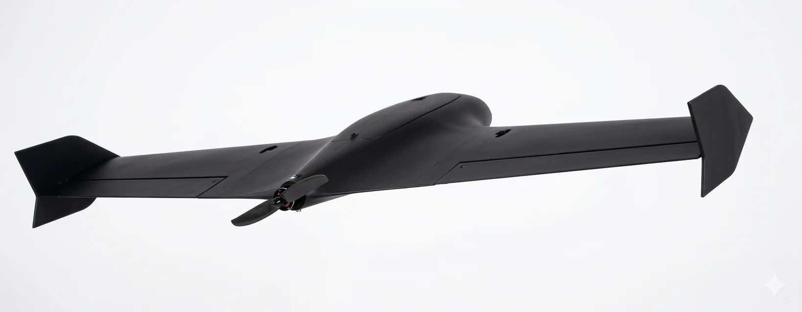
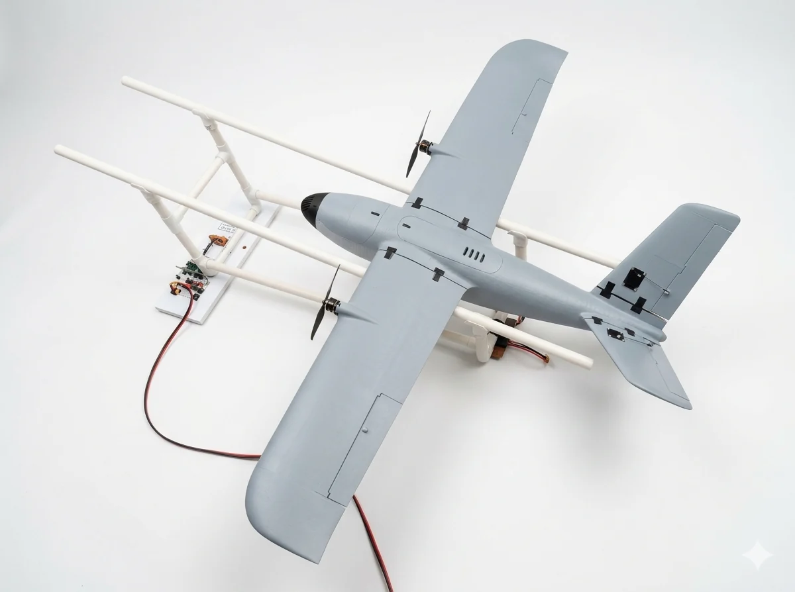
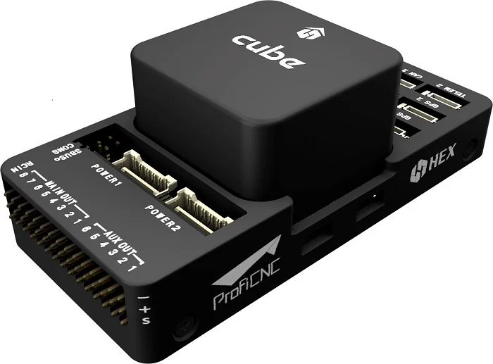
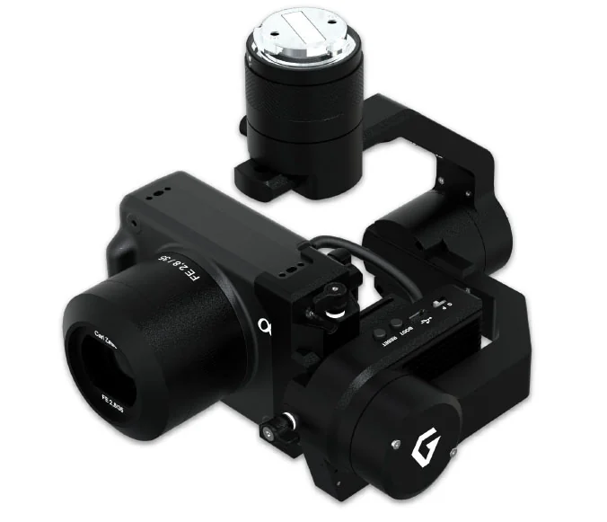
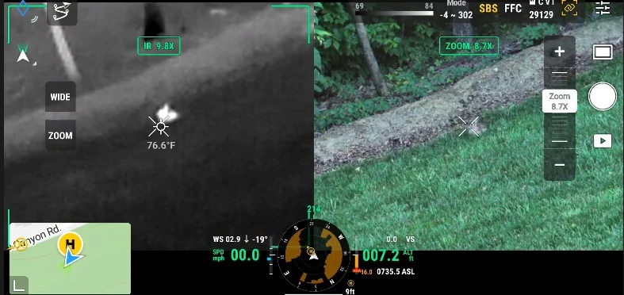
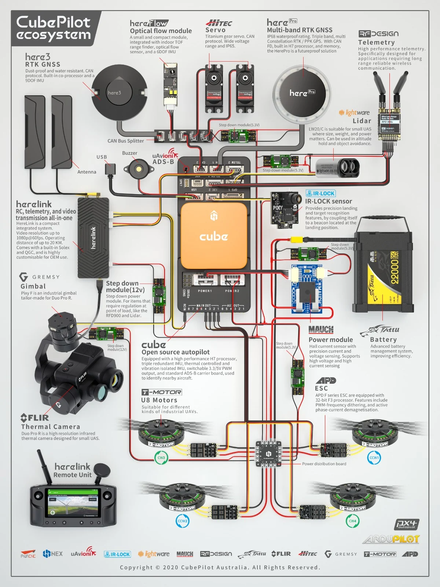
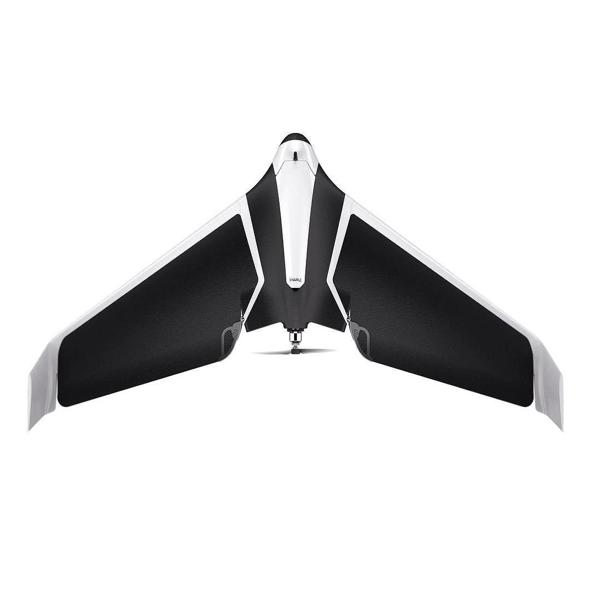
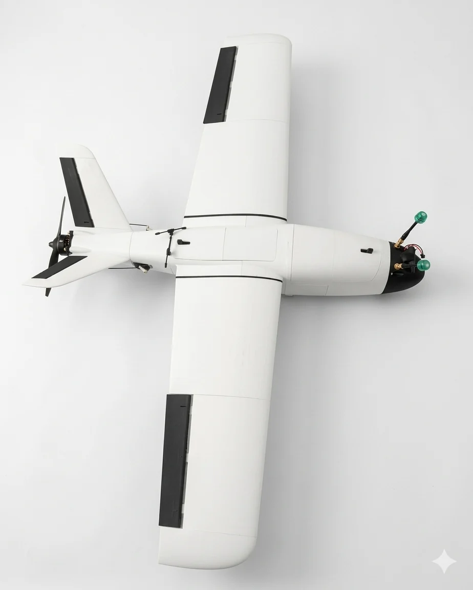

Estrutura e mecanismos
Montagem de célula, superfícies de comando, suportes, compartimentos, trem, mecanismos e interfaces mecânicas.
Montagem e integração de sistemas aéreos não tripulados com arquitetura definida para cada aplicação.
Estrutura, propulsão, energia, aviônicos, comunicação e carga útil são tratados como partes de um único sistema — da bancada às verificações progressivas.

Uma aeronave confiável depende da compatibilidade entre peso, centro de gravidade, alimentação, sinais, controle, enlace, sensores e perfil de voo. A montagem é conduzida a partir dessas relações para reduzir improvisos e criar uma configuração documentada, acessível e evolutiva.
O serviço pode atender uma integração pontual, uma plataforma em desenvolvimento ou a montagem completa conforme o escopo técnico acordado.
Montagem de célula, superfícies de comando, suportes, compartimentos, trem, mecanismos e interfaces mecânicas.
Compatibilização de motores, hélices, ESCs, baterias, distribuição elétrica, conectores, proteção e acesso para manutenção.
Instalação de piloto automático, sensores inerciais, GNSS, telemetria, receptores, atuadores e periféricos de navegação.
Organização de alimentação e sinais, identificação de conexões e definição de interfaces entre os subsistemas.
Integração mecânica, elétrica e funcional de câmeras RGB, sistemas térmicos, gimbals e outros payloads compatíveis.
Parametrização inicial, calibrações, verificação de comandos, energia, comunicação e comportamento funcional em bancada.

A disposição interna precisa considerar centro de gravidade, refrigeração, interferência eletromagnética, roteamento de cabos, fixação e acesso aos componentes. Cada decisão de montagem influencia a operação e a manutenção.
Os componentes ilustram classes de integração possíveis. A seleção final depende da plataforma, do ambiente, da carga útil e dos objetivos de cada projeto.

Integração do autopiloto com sensores, atuação, energia, GNSS, telemetria e lógica operacional da aeronave.

Suporte, alimentação, comunicação, controle e campo de visão considerados junto à estrutura e ao perfil de missão.

Integração de vídeo visível, térmico e informações de voo para visualização e apoio à consciência situacional.
Antes da montagem física, a arquitetura organiza alimentação, sinais, comunicação e dependências. O diagrama ajuda a revisar compatibilidade, interfaces e caminhos críticos entre piloto automático, propulsão, sensores, telemetria e estação de solo.

A montagem acompanha a arquitetura escolhida. Asa voadora, asa fixa convencional e VTOL impõem requisitos próprios de propulsão, estabilidade, espaço interno, sensores e procedimentos de integração.



O processo progride de forma controlada, com verificações compatíveis com a maturidade da plataforma e com o escopo contratado.
Entendimento do uso, ambiente, plataforma, payload, autonomia pretendida, interfaces e restrições.
Definição dos subsistemas, compatibilidades, orçamento de massa e energia e pontos de integração.
Instalação, fixação, chicotes, distribuição, conectores, organização interna e acessibilidade.
Parametrização, calibração e checagens progressivas de alimentação, comandos, sensores e comunicação.
Testes de solo e demais verificações definidas no plano antes de qualquer avanço operacional.
Registro da configuração entregue, orientações acordadas e evolução técnica conforme necessidade.
Arquitetura e lista de componentes conforme o escopo definido.
Integração mecânica, elétrica e funcional dos subsistemas contratados.
Configuração inicial e registros das checagens realizadas.
Identificação de interfaces e documentação técnica acordada.
Orientações de operação, manutenção e próximos ciclos quando aplicável.
Desempenho, alcance, autonomia, capacidade de carga, disponibilidade de componentes e atividades de teste dependem da configuração final. Autorizações de operação, homologações e demais requisitos aplicáveis são definidos conforme o uso pretendido e as autoridades competentes.